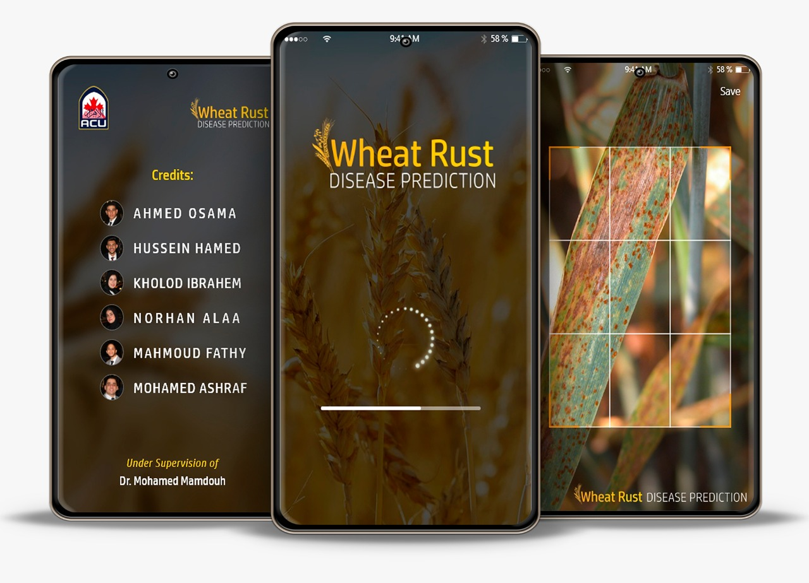

Graduation Project:
Wheat Rust Disease Prediction App
This work proposes a machine learning approach to automatically discover the rust disease of
Wheat plants. Which enables the end-to-end pipeline for diagnosing wheat rust disease. Using an mobile application
you can discover if the plant is diseased or not with just a photo! you can find all the details in the documentation below.
>> Data Wrangling, Applying various machine learning algorithms, Mobile & Web Development.


Here is a quick look at some of my YTONG Company work, these projects were implemented using Python, Jupyter notebook, PowerBI, Excel, PowerPoint and SQL .
Due to the confidentiality of the company's data, the numbers and information have been hidden.

TThis data set includes information about individual rides made in a bike-sharing system covering the greater San Francisco Bay area.
It contains information like the start and end stations of the trip, start and end dates, Bike ID, Memebers birth date, Trips Duration and etc.
The goal is to assess and clean this data set to make it ready for the analysis, Then perform some Uni-variate, Bi-variate and Multi-variate analysis to get some useful and inspiring Insights!

The goal is to wrangle, analyze this Dataset and then communicate my findings about it.
>> Data Wrangling, Exploratory and Explanatory Data Analysis, Conclusions.

wrangle WeRateDogs Twitter Account data to create interesting and trustworthy analyses and visualizations. Gathering Data through Twitter API, Assessing, Cleaning, Analysis, visualizations, documentation

For this project, I will be working to understand the results of an A/B test run by an e-commerce website. The company has developed a new web page in order to try and increase the number of users who “convert,” meaning the number of users who decide to pay for the company’s product.
My goal is to help the company understand if they should implement this new page, keep the old page, or perhaps run the experiment longer to make their decision.

Using Python to undertsan U.S Bike Share Data. Calculating the statistics and building interactive enviroment where a user choses the data and filter for a data set to analyze.